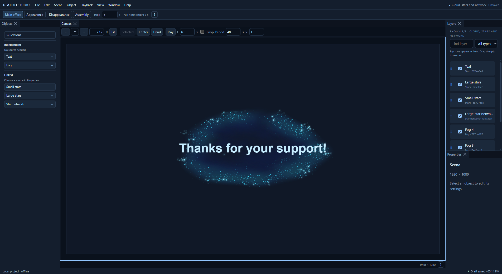

Layers that work together
Connect fog, small and large stars, networks and text. Choose sources and build your own look.
YOUR COMPOSITION. YOUR STYLE.
Text, fog, stars and glowing connections in one editor. Shape your layers, preview the result and save frames with transparency.
PORTABLE / v0.2.1
ALERTSTUDIO / FEATURES
Combine your layers, shape effects and save the result.
Connect fog, small and large stars, networks and text. Choose sources and build your own look.
Move panels, open detached windows and zoom into your canvas. Lock, Solo, search and history keep edits manageable.
Main effect, intro, outro and assembly. Set durations and smooth opacity for the entire composition.
Export PNG with an alpha channel. The application and data stay in your folder, ready to move to another drive.
ALERTSTUDIO / START
A ready-to-run Windows x64 build. No Node.js, pnpm or source compilation required.
Choose a writable folder and run AlertStudio.exe.
Start with the example scene. Projects save to Data/Projects by default.
Close the app before moving its entire folder, including Data. Transfer externally saved files separately.
This editor is under development. PNG and basic stages work; WebM, audio, keyframes and advanced animation are planned. There is no separate AlertStudio publisher signature yet, so Windows may show a warning. Another physical computer has not been tested.
Download the application and start with the example scene.